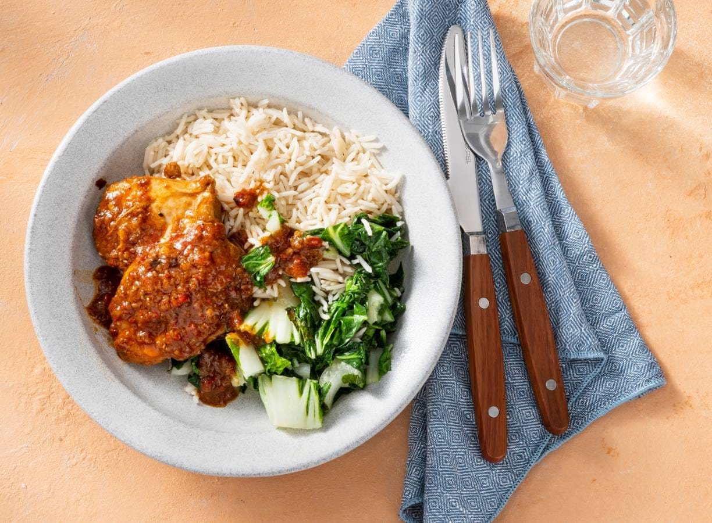

Ajam smoor

Smoorverliefd op deze ajam smoor.
Ingredienten (4 personen)
- 2 eetlepel ketjap manis
- 0.5 theelepel gemalen nootmuskaat
- 575 gram kipdijfilet
- 5 sjalotten
- 5 tenen knoflook
- 2 tomaten
- 25 gram verse gemberwortel
- 2 rode pepers
- 2 eetlepels tamarindepasta
- 2 eetlepels kokosbloesemsuiker
- 3 eetlepels zonnebloemolie
- 1 kippenbouillonblokje
- 300 mililiter kraanwater
- 2 stengels koelverse sereh citroengras
- 2 laurierblaadjes
- 5 kruidnagels
Aan de slag
- Meng in een kom ⅖ van de ketjap met de helft van de geraspte nootmuskaat. Wentel de kippendijen erin en laat 1 uur marineren.
- Snijd ondertussen de sjalotten, knoflook en tomaten grof. Schil de gember en snijd grof. Maak de rode pepers schoon en snijd grof.
- Doe de sjalot, knoflook, tomaat, gember en rode peper met de tamarinde, kokosbloesemsuiker en ⅓ van de olie in een hoge beker. Pureer met een staafmixer tot een pasta, dit is de boemboe.
- Verhit de rest van de olie in een stoofpan op middelhoog vuur. Bak de kip rondom bruin. Schep uit de pan. Bak in dezelfde pan de boemboe al roerend 10 min. aan. Roer regelmatig. Voeg de kip, het bouillonblokje en het water toe.
- Kneus de sereh met de botte kant van een mes en voeg met de laurierblaadjes en de kruidnagels toe. Laat de kip met het deksel op de pan in 30-40 min. op middelhoog vuur gaar stoven. Haal de deksel na 25 min. van de pan en laat de saus nog een beetje inkoken. Lekker met witte rijst en groente als paksoi of boontjes.
Home